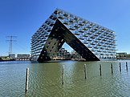

From today's featured article
Judy Ann Santos (born May 11, 1978) is a Filipino actress and film producer. She is a recipient of two Luna Awards, three FAMAS Awards, a Gawad Urian, and a Cairo International Film Festival Award. At age ten, she had her breakthrough as the title character in the children's television show Ula, Ang Batang Gubat (1988). Santos became more recognized as a leading actress in primetime with starring roles in the series Mara Clara (1992) and Esperanza (1997). She received critical acclaim as a woman with dissociative identity disorder in the psychological drama Sabel (2004), which won her a Gawad Urian for Best Actress. Among her highest-grossing films are the comedy Kasal, Kasali, Kasalo (2006) and its sequel Sakal, Sakali, Saklolo (2007). Santos co-produced Ploning (2008) and starred in Mindanao (2019), which were submissions for Best International Feature Film at the Academy Awards. Outside of acting, she is also a chef and a restaurateur. (This article is part of a featured topic: Overview of Judy Ann Santos.)
Recently featured:
Did you know ...

Sluishuis
- ... that the Sluishuis (pictured) has a publicly accessible jetty where boats can moor?
- ... that Gagauz politician Dumitru Topciu was mocked by his colleagues in the Romanian Assembly of Deputies for speaking Romanian with a "boorish accent"?
- ... that an FBI investigation contributed to the cancellation of the Kentucky Derby Festival Basketball Classic, which had been the longest-running U.S. high school all-star basketball game?
- ... that in 1976, William F. Matthews became the first bookbinder to receive the Insignia Award of the City and Guilds of London Institute?
- ... that German president Joachim Gauck, a former Lutheran pastor, visited St. Francis Cathedral in Xi'an, China, 300 years after construction began?
- ... that former East Java vice governor M. Soegiono was a football player before entering the civil service?
- ... that a 3.5-kilometre (2.2 mi) section of the N54 road in the Republic of Ireland cannot be reached without first travelling through Northern Ireland?
- ... that Xiphophorus milleri only rarely eats its young?
In the news
_(cropped).jpg)
King Charles III and Queen Camilla
- King Charles III and Queen Camilla (both pictured) are crowned at Westminster Abbey in London.
- In horse racing, Mage wins the Kentucky Derby.
- The World Health Organization ends its designation of the COVID-19 pandemic as a global health emergency.
- Seventeen people are killed in two separate shootings in Belgrade, Serbia, at an elementary school and nearby.
- At least 60 people are killed in violence between ethnic groups in Manipur, India.
On this day
- 868 – A copy of the Diamond Sutra was printed in Tang-dynasty China, making it the world's oldest dated printed book (frontispiece pictured).
- 1889 – Bandits attacked a U.S. Army paymaster's escort in the Arizona Territory, stealing more than $28,000.
- 1970 – Lubbock, Texas, was struck by a tornado that left 26 people dead.
- 2010 – Gordon Brown resigned as Prime Minister of the United Kingdom and Leader of the Labour Party after failing to strike a coalition agreement with the Liberal Democrats.
- 2022 – Myanmar civil war: Government troops killed 37 unarmed civilians in Mondaingbin.
- Juliette Récamier (d. 1849)
- William Grant Still (b. 1895)
- Abel Goumba (d. 2009)
Today's featured picture

|
Pinnularia is a genus of freshwater algae in the class Bacillariophyceae, the diatoms. An elongated elliptical unicellular organism, it is usually found in ponds and moist soil. The cell walls are composed chiefly of pectic substances on a rigid silica framework, and are composed of two halves known as thecae (or, less formally, valves). This Pinnularia major specimen, about 0.3 millimetres (0.012 in) in length, was photographed through a light microscope. Photograph credit: Anatoly Mikhaltsov
Recently featured:
|
Other areas of Wikipedia
- Community portal – The central hub for editors, with resources, links, tasks, and announcements.
- Village pump – Forum for discussions about Wikipedia itself, including policies and technical issues.
- Site news – Sources of news about Wikipedia and the broader Wikimedia movement.
- Teahouse – Ask basic questions about using or editing Wikipedia.
- Help desk – Ask questions about using or editing Wikipedia.
- Reference desk – Ask research questions about encyclopedic topics.
- Content portals – A unique way to navigate the encyclopedia.
Wikipedia's sister projects
Wikipedia is written by volunteer editors and hosted by the Wikimedia Foundation, a non-profit organization that also hosts a range of other volunteer projects:
-
Commons
Free media repository -
MediaWiki
Wiki software development -
Meta-Wiki
Wikimedia project coordination -
Wikibooks
Free textbooks and manuals -
Wikidata
Free knowledge base -
Wikinews
Free-content news -
Wikiquote
Collection of quotations -
 Wikisource
Wikisource
Free-content library -
Wikispecies
Directory of species -
Wikiversity
Free learning tools -
Wikivoyage
Free travel guide -
 Wiktionary
Wiktionary
Dictionary and thesaurus
Wikipedia languages
This Wikipedia is written in English. Many other Wikipedias are available; some of the largest are listed below.
-
1,000,000+ articles
-
250,000+ articles
-
50,000+ articles